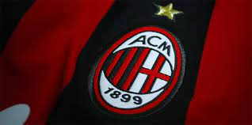

AC Milan Факти
Історія AC Milan
Футбольний клуб «Мілан» (італ. L’Associazione Calcio Milan), більше відомий як просто «Мілан» — італійський футбольний клуб із міста Мілана. Виступає у вищій італійській лізі («Серія A») разом із іншим міланським клубом «Інтернаціонале», своїм довічним принциповим суперником у чемпіонаті Італії. Футболісти «Мілану» грають у смугастій червоно-чорній формі, від якої походить їхнє італійське прізвисько «Россонері» (італ. rossoneri від rosso — «червоний» і nero — «чорний»). Клуб 16 грудня 1899 року заснував британець Альфред Едвардс, який тоді був британським віце-консулом у Мілані. У пам'ять про засновника клуб зберігає англійське написання назви міста: англ. Milan замість італ. Milano, хоча за часів Муссоліні назва клубу на деякий час змінювалася за вимогою фашистського керівництва країни. Утім, у написанні й вимові назви міста місцевим діалектом італійської мови кінцевого «o» також немає. «Мілан» — один із найвідоміших у світі італійських клубів і один з найтитулованіших за всю історію світового футболу. За кількістю здобутих міжнародних титулів (16) «Мілан» разом з аргентинським «Бока Хуніорс» посідає перше місце, випереджаючи мадридський «Реал» і аргентинський «Індепендьєнте» (по 15); «Мілан» 7 разів вигравав Лігу чемпіонів і 4 рази (більше, ніж будь-який інший клуб) — Суперкубок Європи. За кількістю виграшів Ліги чемпіонів «Мілан» далеко випереджає інші італійські клуби: «Ювентус» та «Інтернаціонале» виборювали цей трофей два та три рази відповідно. Також «Мілан» двічі вигравав європейський Кубок Кубків. Окрім того, «Мілан» — перша італійська команда за кількістю перемог у Міжконтинентальному кубку (тричі, «Ювентус» та «Інтернаціонале» — лише по два); також він двічі вигравав Латинський кубок, тричі — Королівську медаль, один раз — чемпіонат світу серед клубів, і один — Кубок Мітропи. Єдиний європейський трофей, який «Мілану» не пощастило виграти жодного разу — це Кубок УЄФА. Хоча за перемогами на міжнародному рівні «Мілан» випереджає всі інші італійські клуби, за загальною кількістю титулів на національному рівні він посідає лише третє місце, поступаючись «Ювентусу» та «Інтернаціонале»: за свою історію «Мілан» 19 разів був чемпіоном Італії, 5 разів вигравав Кубок Італії, і 7 — Суперкубок Італії. Історично «Мілан» завжди вважався клубом міського робітничого класу і членів профспілок, серед яких було багато трудових мігрантів з півдня Італії, тоді як за «Інтер», другий великий клуб міста, традиційно вболівали представники заможнішого середнього класу, переважно корінні міланці. В останні десятиріччя візерунок підтримки зазнав певних змін після того, як власником «Мілана» став консервативний медіа-магнат і колишній прем'єр-міністр Італії Сільвіо Берлусконі, а «Інтер» придбав нафтопромисловець Массімо Моратті, відомий своїми лівими поглядами. Однак і досі серед уболівальників «Мілану» переважають представники лівої частини політичного спектру, тоді як серед фанатів «Інтеру» більше консерваторів і прихильників правих поглядів. За результатами дослідження, проведеного в 2002 році газетою «L’Espresso», «Мілан» — третя команда в Італії за кількістю вболівальників. За результатами дослідження італійського Національного статистичного інституту, опублікованого в квітні 2005 року, «Мілан» виявився другою командою країни, за яку вболівають близько 7,5 млн. тифозі. У 2006 році «Мілан» був втягнутий до футбольного скандалу, під час якого п'ять команд вищої італійської ліги («Серії А») були звинувачені у влаштуванні договірних матчів і підкупі арбітрів. «Мілан» було покарано зняттям 15 очок у наступному розіграші ліги; після апеляції штраф було зменшено до 8 очок. Це був не перший в історії клубу гучний скандал: у 1980 році «Мілан» опинився в центрі «скандалу Тотонері», коли букмекерський синдикат сплачував гроші гравцям і футбольним функціонерам за сприятливі для нього результати матчів. Тоді «Мілан» зазнав суворішого покарання і був висланий до нижчої ліги. 13 квітня 2017 року клуб був офіційно проданий китайському холдингу «Rossoneri Sport Investment Lux»[1].
Історія клубу
Заснування Герберт Кілпін, один з засновників клубу. «Крикетний і футбольний клуб Мілан» (англ. Milan Cricket and Foot-Ball Club) був заснований 16 грудня 1899 року у пивниці на вулиці Берке в Мілані. Його засновниками були англійці Альфред Едвардс і Герберт Кілпін, любителі футболу, який в той час набув великої популярності на їхній батьківщині в Англії. Про заснування клубу громадськість була повідомлена двома днями пізніше, в понеділок 18 грудня 1899 в газеті «Газетта делло Спорт». Едвардс, в той час — британський віце-консул в Мілані і відома особа в міланському вищому світі, став першим президентом клубу. Початково клуб складався з секції крикету, яку очолив Едвард Берра, і секції футболу, якою керував Девід Елісон. У Кілпіна, першого воротаря і першого капітана команди, знайшовся спортивний костюм, в якому він грав в футбол дома в Англії; саме від цього костюму взяли початок традиційні кольори «Мілана» — червоний та чорний (італ. rosso і nero) і назва, яка закріпилася за його гравцями — россонері (rossoneri — «червоно-чорні»). В січні 1900 року «Мілан» вступив до Італійської федерації футболу. З цього моменту команда почала набувати широкої популярності і престижу. Вже в квітні того же року клуб виграв Королівську Медаль, подолавши «Ювентус» з рахунком 2:0. Нагорода, яку прикріпив до прапора клубу сам король Італії Умберто Савойський, стала першим трофеєм, що його виборов клуб. В наступному році «Мілан» повторив цей успіх. «Червоно-чорні» швидко прогресували і вже в 1901 році здобули свій перший титул чемпіонів країни; у фіналі з рахунком 3:0 вони подолали генуезьку «Дженоа», перервавши її тривалу серію перемог. Наступного року міланська команда під керівництвом легендарного капітана Кілпіна у фіналі поступилася тієї же «Дженоа», і другий чемпіонський титул міланцям вдалося вибороти лише в 1906 році. В тому сезоні вперше в історії чемпіонатів Італії дві команди — «Мілан» і «Ювентус», діючий на той час чемпіон країни — набрали однакову кількість очок, через що для з'ясування остаточного переможця довелося влаштувати додатковий матч. Гра проходила в Турині на стадіоні «Ювентуса» — цей привілей він здобув завдяки кращій різниці забитих та пропущених м'ячів; але основний та додатковий час матчу закінчилися нульовою нічиєю. Оскільки післяматчевих пенальті тоді ще не було, команди мали зіграти ще один додатковий матч. Федерація вирішила провести його на «нейтральному» полі, яким було обрано поле клубу «Міланезе» з Мілана; в знак протесту проти цього рішення «Ювентус» відмовився грати, і чемпіонство було присуджено «Мілану». Ця прикра подія трохи зіпсувала радість від здобуття чемпіонського титулу 1906 року, але в наступному році «Мілан» довів своє право на нього, повторивши своє досягнення: цього разу у фінальному колі змагань «Мілан» подолав «Торіно» і «Андреа Доріа». В 1908 році Італійська федерація футболу почала проводити політику витиснення іноземних гравців зі складу італійських клубних команд. Довкола цієї політики в керівництві клубу виникла суперечка; одна фракція закликала до підтримки політики федерації, друга вважала необхідним добиватися скасування обмежень щодо іноземців. Внаслідок цієї суперечки клуб зазнав розколу; частина його членів покинула «Мілан» і 9 березня заснувала новий клуб, який отримав назву «Міжнародний футбольний клуб» (італ. Internazionale Football Club), чи просто «Інтернаціонале». Розчарований політикою футбольною федерації, «Мілан» також покинув і Герберт Кілпін, завершивши ігрову кар'єру. Розпад ослабив «Мілан», і він ще довго не вигравав чемпіонатів Італії. В 1912 році він наблизився до успіху, але посів лише друге місце в зоні Лігурія—Ломбардія—П'ємонт (в той час чемпіонат проводився по географічних зонах, переможці яких потім розігрували між собою чемпіонський титул), пропустивши вперед клуб «Про Верчеллі» і проґавивши можливість зустрітися у фіналі зі значно скромнішим переможцем зони Венеція—Емілія-Романья. В 1915 році «Мілан» пропустив вперед «Дженоа» в розіграші фіналу північної зони. В 1916 році «Мілан» виграв Кубок Федерації, який в той рік замінив чемпіонат, скасований у зв'язку з Першою Світовою війною. Втім, цей трофей Італійська федерація футболу аналогом чемпіонського титулу офіційно не визнає. В 1919 році початкова назва клубу Milan Cricket and Foot-Ball Club була змінена на Milan Football Club (Футбольний клуб «Мілан»). Темні роки Після здобуття перших трьох чемпіонських титулів в історії клубу настав тривалий період «занепаду», коли «Мілан», хоча і залишався весь час у вищій італійській лізі (спочатку в Першій лізі, потім — Серії А після того, як вона була утворена в 1929—1930 роках), але постійно перебував біля середини турнірної таблиці, ніколи не підіймаючись вище третього місця. Втім, саме в цей період завдяки діяльності президента клубу П'єро Піреллі був побудований стадіон «Сан-Сіро». В 1938 році фашистське керівництво країни примусило клуб італізувати свою назву; англійська назва клубу була замінена на італійську «Associazione Calcio Milano». По закінченні Другої Світової війни клуб повернув собі англійську назву, але залишив італійську позначку A.C.; з 1946 року офіційна назва клубу — «Associazione Calcio Milan», яку він носить і зараз. Гуннар Грен в футболці «Мілана», 1950-ті роки. «Казкові п'ятдесяті» В післявоєнні роки «Мілан» постійно знаходився в трійці найкращих клубів країни, за винятком сезону 1946/47 років, який він завершив на четвертому місці. Декілька разів міланці опинялися за крок від чемпіонства, і 1951 зрештою вибороли його в четвертий раз у своїй історії, після 44-річної перерви. 1950-ті роки — золотий період для «Мілана», в складі якого сяяли такі зірки, як знамените шведське тріо Гре-Но-Лі (Гуннар Грен, Гуннар Нордаль і Нільс Лідхольм), Лоренцо Буффон і Карло Анновацці. «Россонері» виграли престижний Латинський Кубок в 1951 і 1956 роках і тричі (в 1955/56, 1956/57 і 1958/59 роках) ставали чемпіонами Італії завдяки голам Гуннара Нордаля, п'ятикратного найкращого бомбардира сезону, тактичним схемам Нільса Лідхольма, спочатку півзахисника, а потім ліберо, непроникній обороні, організованій Чезаре Мальдіні. Протягом десятиріччя, з 1947 по 1957 роки, «Мілан» не опускався в турнірній таблиці нижче третього місця. Саме в це десятиріччя трапилася гучна перемога з розгромним рахунком 7:1 над запеклим суперником «Мілана» «Ювентусом» на його полі, яка відбулася 5 лютого 1950 року; в цьому матчі Гуннар Нордаль забив три голи. Ера Рокко Після сьомого чемпіонства, здобутого під керівництвом Джузеппе Віані, вже через три роки — в сезоні 1961/62 — новий тренер клубу Нерео Рокко привів «Мілан» до восьмого титулу, який став можливим завдяки майстерній грі молодого Джанні Рівера і голам Жозе Альтафіні. Голи цього бомбардира також відіграли вирішальну роль у виграші «Міланом» Кубка Чемпіонів; це трапилося в 1963 році на легендарному лондонському стадіоні «Вемблі», де Мілан переміг португальську «Бенфіку» з рахунком 3:1. «Мілан» став першим італійським клубом, якому пощастило здобути цю нагороду. В розіграші Міжконтинентального Кубка в тому же році «Мілан» поступився бразильському «Сантусу», за який тоді грав знаменитий Пеле. «Мілан» під керівництвом Нерео Рокко дійсно являв собою одну з найкращих команд того часу, кристалізуючи і розвиваючи стиль гри, який в наступні десятиріччя стане відомим як «італійський». Зокрема, Рокко винайшов і під час перебування у «Мілані» розвинув тактичну схему захисту, яка стала відомою під назвою «катеначо». Проте незважаючи на всі свої успіхи, протягом 1960-х років «Мілан» вигравав менше, ніж був здатен, через жорстоку конкуренцію з боку «Інтера», очолюваного в той період Еленіо Ереррою. Наступний чемпіонський титул прийшов до «Мілана» в сезоні 1967/68 завдяки голам П'єрино Пратті, найкращого бомбардира Серії А того сезону; в тому ж сезоні «Мілан» завоював Кубок володарів Кубків, подолавши у фіналі німецький «Гамбург» за допомогою двох голів Курта Хамріна. В наступному сезоні «Мілан» вдруге виграв Кубок Чемпіонів (у фіналі розгромивши в Мадриді голландський «Аякс» з рахунком 4:1), а в 1969 році вперше у своїй історії здобув Міжконтинентальний кубок, за результатами двох драматичних матчів подолавши аргентинський «Естудіантес» (3:0 і 1:2). Ювілейне чемпіонство і вперше у Серії B В 1970-ті роки «Мілан» тричі вигравав Кубок Італії і здобув другий Кубок володарів Кубків, однак головною метою «червоно-чорних» був десятий, ювілейний титул чемпіона Італії. В сезоні 1972/73 «Мілан» був на крок від мети, але в останньому матчі чемпіонату зазнав принизливої поразки від «Верони». В той же час 1970-ті роки відзначалися зростанням хаосу у вищому керівництві клубу: менше ніж за десять років змінилося сім президентів; в атмосфері безладдя «Мілан» відіграв три сірих сезони, опинившись у середині турнірної таблиці, а в сезоні 1976/77 уникнув вильоту до нижчої ліги (Серії B) лише в останньому колі чемпіонату, завершивши турнір на десятому місці. В наступному сезоні головним тренером свого колишнього клубу став Нільс Лідхольм, якому вдалося пожвавити команду, залучивши до неї талановитих молодих гравців; сезон 1977/78 поновлений «Мілан» завершив на четвертому місці, а в 1978/79 нарешті виборов десятий чемпіонський титул, через десять років після попереднього. Неоцінний внесок в цей успіх зробив Джанні Рівера, який по закінченні цього сезону завершив свою футбольну кар'єру, протягом якої відіграв понад 500 матчів у складі «Мілана». Незадовго до десятого скудетто, 23 квітня 1978 року, в Серії A дебютував Франко Барезі, майбутній багаторічний лідер міланської команди. Перемогу міланців підкреслило досягнення в тому же сезоні «Перуджи», якій першою з італійських клубів пощастило відіграти весь сезон без жодної поразки («Мілан» зміг повторити це досягнення лише в сезоні 1991/92); через велику кількість нічиїх навіть такої чудової гри «Перуджі» не вистачило, щоб випередити «Мілан». Незважаючи на гучну перемогу в наступному сезоні «Мілан» очікувало найсерйозніше потрясіння в його історії. Наприкінці сезону спалахнув букмекерський скандал, під час якого з'ясувалося, що деякі гравці і футбольні функціонери Серії А отримували гроші від букмекерів за сприятливі для них результати ігор. Рішення органів спортивної юстиції передбачало вислання «Мілана» (разом з «Лаціо») до нижчої ліги (Серії B) і довічну дискваліфікацію президента «Мілана» Феліче Коломбо; гравці «Мілана» Енріко Альбертозі, Джорджо Моріні і Стефано Кьйоді були дискваліфіковані відповідно на чотири роки, один рік і шість місяців. В 1981 році клуб з новим президентом Гаетано Мораццоні на чолі виграв чемпіонат Серії B і повернувся до вищого дивізіону. В 1982 році президентом клубу став Джузеппе Фаріна (до того — президент «Віченци»), але це не врятувало «Мілан» від повторного вильоту до Серії B, цього разу — внаслідок поганої гри (цей сезон був найгіршим в історії клубу, команда здобула лише 24 очка в 30 матчах). Надія уникнути вильоту зберігалася до останнього кола чемпіонату, в якому «Мілан» здобув перемогу над «Чезеною»; однак в матчі «Наполі»—"Дженоа" воротар неаполітанців Лучано Кастелліні за п'ять хвилин до закінчення матчу зробив помилку, яка дозволила генуезцям виконати кутовий удар. «Дженоа» скористалася нагодою і зрівняла рахунок 2:2; здобуте очко дозволило їй випередити «Мілан», відправивши його до Серії B. Президентство Джузеппе Фаріни В сезоні 1982/83 клуб під керівництвом нового тренера Іларіо Кастаньєра здобув яскраву перемогу в Серії B і повернувся до вищої ліги; в складі команди в той час почали виблискувати Франко Барезі, Мауро Тассотті, Альберіго Евані і Філіппо Галлі, які мали стати головними героями міланських успіхів наступних років. В сезон 1983/84 основні зусилля пішли на впорядкування команди, налагодження взаємодії і вирішення організаційних проблем. В цьому сезоні «Мілан» грав виважено і обмірковано, його головною метою було закріпитися в Серії А і уникнути ризику повторного вильоту з ліги; наприкінці сезону «Мілан» опинився на восьмому щаблі турнірної таблиці, поступившись «Сампдорії» і «Вероні» лише за різницею забитих та пропущених м'ячів. Влітку 1984 року Фаріна активно взявся за розбудову конкурентноздатної команди. Призидент повернув на посаду тренера Нільса Лідхольма, який до того досяг значних успіхів з римською «Ромою», а також придбав нападників П'єтро Паоло Вірдіса і Марка Хейтлі (якого вболівальники прозвали «Аттилою»); трохи пізніше до команди долучилися талановитий плеймейкер «Манчестер Юнайтед» Рей Вілкінс і ліберо з «Роми» Агостіно Ді Бартоломеї. Наступний сезон міланці відіграли вдало, посівши в чемпіонаті п'яте місце слідом за «Ювентусом» і «Ромою», незаперечними футбольними грандами того часу, вперше за останні сім років перемогли в Міланському дербі і досягли фіналу Кубка Італії, поступившись у фінальному матчі «Сампдорії». Цей сезон також став дебютним у складі «Мілана» для Паоло Мальдіні. Влітку 1985 року «Мілан» придбав у «Ювентуса» Паоло Россі, чемпіона світу 1982 року і володаря Золотого м'яча, який разом з Вірдісом і Хейтлі склав потужне атакувальне тріо. Команда значно зміцніла і протягом першої половини сезону 1985/86 весь час перебувала на другому чи третьому місці турнірної таблиці, поступаючись лише лідеру сезону «Ювентусу». На початку нового року раптово загострилися фінансові проблеми: клуб наробив боргів, і йому загрожувало банкрутство, якщо борги не будуть терміново сплачені. На допомогу клубу прийшов міланський підприємець і медіа-магнат Сільвіо Берлусконі. 20 лютого 1986 року він придбав клуб, покрив дефіцит його балансу і відразу взяв активну участь в розбудові команди. Наступного літа в своїй промові з приводу відкриття чергового сезону він висвітлив нову задачу керівництва клубу: «Ми повинні стати найсильнішою командою у світі». Результати попереднього сезону 1985/86 показали початкове становище, з якого клуб повинен був підійматися на вершину футбольного Олімпу: «Мілан» закінчив чемпіонат на сьомому місці, відставши від «Інтера» на одне очко. Обидві команди знаходилися поза межами зони УЄФА, але завдяки перемозі «Роми» над «Сампдорією» в Кубку Італії «Інтер» все ж таки потрапив до розіграшу Кубка УЄФА в наступному сезоні. Сільвіо Берлусконі і «безсмертні» Саккі (1987—1991) З приходом нового власника клуб в короткий раз пережив справжнє відродження. Однак в перший сезон під головуванням Берлусконі «Мілан» зазнавав злетів і падінь, не гідних команди, яка ставить собі метою здобуття «скудетто». Всередині сезону пішов у відставку тренер Нільс Лідхольм, і його замінив Фабіо Капелло. Молодому тренеру вдалося привести клуб на п'яте місце в турнірній таблиці після важкої нічиї з «Сампдорією»; ця позиція дозволила «Мілану» в наступному сезоні взяти участь у розіграші Кубка УЄФА. Арріго Саккі Рууд Гулліт, володар «Золотого м'яча» 1987. Літом 1987 року Берлусконі призначив головним тренером клубу Арріго Саккі, який запровадив цілковито новий стиль гри, заснований на зональній обороні, досконалій тактиці створення положення поза грою, міцному угрупуванні в центрі поля (побудованому довкола Роберто Донадоні) і потужній атаці, яку разом з П'єтро Паоло Вірдісом створили голландські чемпіони Рууд Гулліт і Марко ван Бастен. Попри те, що травми змусили Ван Бастена пропустити майже весь сезон, склад «Мілана» в цьому сезоні був одним з найсильніших: до талановитих голландських нападників слід додати непробивну оборону, очолювану капітаном Франко Барезі в складі Карло Анчелотті, Паоло Мальдіні, Алессандро Костакуртою і Мауро Тассотті, а також надійного воротаря Джованні Галлі, який приєднався до «Мілана» в попередньому сезоні. В перший же сезон Арріго Саккі на посаді тренера «Мілан» виграв чемпіонат Італії, в одинадцятий раз у своїй історії, здобувши неймовірну перемогу над «Наполі», попереднім чемпіоном, в складі якого грав Дієго Марадона, на його стадіоні «Сан-Паоло» в Неаполі. В наступному сезоні 1988/89 до двох голландців долучився третій, Франк Рейкаард; в цьому сезоні «Мілан» став героєм Кубка Чемпіонів, під час якого труднощів також не бракувало. В гостьовому матчі другого туру проти белградської «Црвени Звезди» (домашня зустріч закінчилася нічиєю 1:1) на поле впав густий туман, і через практично нульову видимість німецький арбітр Паулі був змушений достроково завершити гру, коли югослави вели у рахунку, а Вірдіса було видалено з поля. Після цього міланці мали серію переможних матчів, вибивши з розіграшу Кубка спочатку «Црвену Звезду» в повторному матчі (під час якого один з міланських голів не був зарахований суддею, не зважаючи на те, що м'яч залетів за лінію воріт принаймні на півметра), потім бременський «Вердер» (в матчі з яким також був незарахований гол, хоча не такий очевидний, як в попередній грі), і здобувши історичну перемогу з рахунком 5:0 над мадридським «Реалом» завдяки голам Анчелотті, Рейкаарда, Гулліта, Ван Бастена і Донадоні; преса вважала цей матч найкращім матчем «Мілана» за всю його історію. В фіналі на стадіоні «Ноу Камп» в Барселоні «Мілан» подолав румунську «Стяуа» з рахунком 4:0, виборовши свій третій Кубок Чемпіонів. В Італії того сезону «Мілан» виграв свій перший Суперкубок Італії, а в чемпіонаті посів третє місце, пропустивши вперед «Інтер» і «Наполі». Наступного року «Мілан» знову виграв Кубок Чемпіонів, цього разу подолавши у фіналі «Бенфіку» з рахунком 1:0 (гол забив Франк Рейкаард), Суперкубок Європи (перемога за результатами двох матчів над «Барселоною» — 1:1 і 1:0) і Інтерконтинентальний кубок (перемога 1:0 в додатковий час над колумбійським «Насьональем» з Медельїна). Чемпіонат він закінчив на другому місці, відставши на два очка від «Наполі», з яким «Мілан» сперечався за перше місце протягом всього чемпіонату. Наприкінці турніру, 8 квітня 1990 року, коли «Мілан» випереджав «Наполі» і посідав перше місце, «Наполі» вдалося наздогнати лідера завдяки прикрому випадку. Матчі обох команд в цей день («Мілана» з «Болоньєю», «Наполі» з «Аталантою») завершилися нульовою нічиєю, однак під час матчу «Наполі»—"Аталанта" в голову гравця «Наполі» Алемао влучила монета, запущена з трибун, і він був змушений покинути поле. Внаслідок цього інциденту дисциплінарна комісія присудила «Аталанті» технічну поразку з рахунком 0:2, і турнірне положення «Мілана» і «Інтера» знову зрівнялося. Переможець чемпіонату виявився лише в останній ігровий день турніру, коли «Мілану» на перешкоді до чергового «скудетто» знову, як і раніше в 1973 році, встала «Верона» — «Мілан» програв їй в гостьовому матчі. Друга «фатальна Верона» в історії клубу трапилася на 89-й хвилині матчу, коли веронці забили єдиний в цій грі м'яч, тоді як «Наполі» вдалося перемогти в своєму матчі «Болонью». Через три дні у домашньому матчі з «Ювентусом» «Мілан» також програв Кубок Італії (0:1, перша гра — 0:0). В сезоні 1990/91 «Мілан» втретє виграв Міжконтинентальний кубок, подолавши парагвайську «Олімпію» з Асунсьйона з рахунком 3:0, а також другий Суперкубок Європи, цього разу здобувши перемогу над «Сампдорією» (1:1, 2:0). В чемпіонаті Італії «Мілан» знову опинився на другому місці, поділивши його з «Інтером» і відставши від чемпіону Італії «Сампдорії» на п'ять очок. В цьому сезоні з «Міланом» також трапився неприємний інцидент в Марселі: за кілька хвилин до кінця матчу, коли «Мілан» програвав, на стадіоні погасло світло, і Адріано Галліані, виконавчий директор клубу, вивів гравців з поля на знак протесту; за цей демарш клуб оштрафували річною дискваліфікацією в єврокубках. «Непереможні» Капелло (1991—1996) Фабіо Капелло В наступному сезоні головним тренером клубу став Фабіо Капелло, який вже займав цю посаду в 1986–1987 роках, коли він на деякий час замінив Нільса Лідхольма всередині сезону. Під керівництвом Капелло «Мілан» виграв дванадцяте «скудетто» і відкрив багатий на успіхи період в своїй історії, під час якого команда здобула прізвисько «Мілан непереможних» (італ. Il Milan degli Invincibili). В цьому сезоні клуб набрав в чемпіонаті 56 очок і не зазнав жодної поразки; до нього це вдавалося тільки «Перуджі» в сезоні 1978/79, але вона тоді поступилася «Мілану» внаслідок занадто великої кількості нічиїх. Загальна тривалість безпрограшної серії клубу склала рекордні 58 матчів. Станом на 2007 рік «Мілан» залишається єдиною італійською командою, яка в одному сезоні відіграла чемпіонат без поразок і виборола чемпіонство. Ван Бастен став найкращим бомбардиром сезону; в наступному сезоні він наблизився до повторення цього досягнення, але важка травма гомілковостопного суглобу надовго вивела його з ладу і не дозволила продовжити боротьбу за цей титул. Наступного сезону 1992/93 «Мілан» знову виборов чемпіонський титул, тринадцятий в історії і другий поспіль. Втім, на європейському рівні на перешкоді «Мілану» до Кубка Європи знову став марсельський«Олімпік», який переміг у фінальному матчі з рахунком 1:0. Майже через тринадцять років, в січні 2006 року, колишній центральний півзахисник «Марселя» Жан-Жак Ейделі в інтерв'ю французькій газеті зізнався, що переможці Ліги Чемпіонів 1993 року перед фінальним матчем з «Міланом» вживали допінг. Ця заява здійснила гучний скандал і шквал заперечень з боку колишніх керівників і гравців «Марселя»; в пресі висловлювались пропозиції відібрати трофей у «Марселя» і передати його «Мілану», однак потім пристрасті вщухли і ніяких наслідків цей скандал не мав. Тим часом «голландська ера» в історії «Мілана» завершилася; головними героями наступного сезону 1993/94 років стали чорногорець Деян Савічевич, хорват Звонімір Бобан та французи Жан-П'єр Папен і Марсель Десаї. «Мілан» відігрався за попередню поразку в Лізі Чемпіонів, здобувши титул у фінальному матчі в Афінах 18 травня 1994 року перемогою над «Барселоною» з рахунком 4:0. В національному чемпіонаті «Мілан» також здобув перемогу, отримавши чотирнадцятий чемпіонський титул (третє скудетто поспіль). Лише «Мілану» в сезоні 1994/95 та «Інтернаціонале» в 1964/65 вдавалося одночасно здобути і титул чемпіонів Італії, і Кубок Чемпіонів. В сезоні 1994/95 років «Мілан» закінчив чемпіонат Італії на четвертій ланці і третій раз поспіль вийшов до фіналу Ліги Чемпіонів, але у фіналі поступився голландському «Аяксу» з рахунком 1:0 (гол забив майбутній гравець «Мілана» Патрік Клейверт). Також в 1995 році міланці здобули Суперкубок Європи, подолавши лондонський «Арсенал». В сезоні 1995/96, останньому сезоні «ери Капелло», «Мілан» знову здобуває скудетто, вже шістнадцяте у своїй історії і четверте за останні п'ять років; команда незаперечно лідирувала під час всього чемпіонату і в результаті випередила «Ювентус», що посів друге місце, на 8 очок. В Кубку УЄФА цього сезону «Мілан» дійшов лише до чвертьфіналу, де був зупинений французьким «Бордо», в складі якого грав Зінедін Зідан. Після закінчення сезону Фабіо Капелло пішов у відставку; як з'ясувалося пізніше, ця подія знаменувала кінець тривалої серії міланських успіхів. Табарес і повернення Саккі і Капелло: криза 1996—1998 Після низки перемог на національному та європейському рівні в 1996—1998 роках «Мілан» потрапив до глибокої кризи, під час якої клуб опинявся в небезпечній близькості до «зони вильоту» в чемпіонаті Італії і зазнав принизливої невдачі ще на попередньому етапі розіграшу Ліги Чемпіонів. В невдачах команди звинувачували помилки тренерів, але насправді клуб, скоріше за все, просто переживав зміну поколінь. В ці роки відбувалася зміна епох, і період невдач спонукав керівництво клубу запровадити реформи, з яких він згодом вийшов відновленим і підсиленим. Сезон Табареса і Саккі (1996—1997) Влітку 1996 року головним тренером «Мілана» став уругваєць Оскар Табарес; преса і вболівальники зустріли це призначення зі скептицизмом. Кілька щойно придбаних гравців (Крістоф Дюгарі, Едгар Девідс, Міхаель Райцигер і воротар Анджело Паготто) долучилися до перевіреної команди ветеранів попередніх сезонів (Франко Барезі, Деян Савічевіч, Роберто Баджо, Мауро Тассотті, Себастьяно Россі, Звонімір Бобан, Джордж Веа, Паоло Мальдіні, Деметріо Альбертіні, Марко Сімоне, Алессандро Костакурта і Марсель Десаї). Основний склад команди майже не змінився порівняно з попереднім сезоном, про що свідчить мала кількість проданих гравців. З гравців, які регулярно виходили на поле в попередньому сезоні, покинув клубу лише один — флагман команди Роберто Донадоні. Незважаючи на велику кількість зірок у своєму складі, «Мілан» почав сезон невдало, програвши на своєму полі «Фіорентині» в матчі Суперкубка Італії. В наступних матчах невдачі продовжилися. З розіграшу Ліги Чемпіонів «Мілан» вибув ще на відбірному етапі, програвши домашній матч норвезькому «Русенборгу». В італійському чемпіонаті наприкінці осінньої половини сезону клуб безнадійно застряв внизу турнірної таблиці на одинадцятому місці; 1 грудня 1996 року після гостьової поразки від «П'яченци» (3:2) Табареса було звільнено і замінено на Арріго Саккі, який в попередні роки вдало тренував національну збірну Італії. На жаль, новому тренеру не вдалося переломити негативну тенденцію; труднощі, що їх переживав клуб, досягли апогею в домашній поразці від «Ювентуса» 6 квітня 1997 з розгромним рахунком 1:6. Гірке повернення Капелло (1997—1998) В сезоні 1997/98 на посаду тренера «Мілана» повернувся Фабіо Капелло, який в попередньому сезоні виграв чемпіонат Іспанії з мадридським «Реалом». Керівництво клубу сподівалося, що тренер, який очолював команду під час її переможної доби, допоможе подолати кризу, в якій вона опинилася. Міланські придбання цього року стали ще багатшими: до команди долучилися Крістіан Циге, Патрік Клейверт, Массімо Тайбі, Вінстон Богард, Єспер Блумквіст, Стейнар Нільсен, Андреас Андерссон, Леонардо, також повернувся Роберто Донадоні, а в січні 1998 прийшов Філіппо Маньєро. Однак були і втрати: в 1996 клуб покинув Едгар Девідс, який спочатку перейшов до голландського «Аяксу», а потім — до «Ювентусу», в якому швидко став одним з ключових гравців. Як і в попередньому сезоні, «Мілан» грав невдало протягом всього сезону і закінчив його на десятому місці; в останньому колі чемпіонату міланці поступилися «Ромі» з рахунком 5:0. В Кубку Італії «Мілан» грав краще, подолавши у чвертьфінальному міланському дербі «Інтер» з рахунком 5:0, однак у фіналі поступився «Лаціо»: домашня зустріч закінчилася внічию 1:1, але у Римі міланці програли з рахунком 1:3; третій гол забив майбутній гравець «Мілану» Алессандро Неста. Альберто Дзаккероні 16-те скудетто Влітку 1998 року головним тренером «Мілана» став Альберто Дзаккероні, перспективний тренер, який в попередньому сезоні досяг значного прогресу з «Удінезе», приємно здивувавши вболівальників і експертів своєю атакувальною грою з застосуванням збалансованої моделі 3-4-3. Зак (як його прозвали вболівальники) привів за собою двох гравців «Удінезе», які відзначилися в попередньому сезоні: нападника Олівера Бірхофа і півзахисника Томаса Хельвега. Також до складу команди долучилися Роберто Аяла, Луїджі Сала, Бруно Н'Готті і Андрес Гульєльмінп'єтро. Вже в першому своєму міланському сезоні 1998/99 Дзаккероні заклав підвалини нового циклу відродження команди, вигравши шістнадцяте скудетто, яким клуб відсвяткував столітню річницю свого заснування. Свій переможний сезон «Мілан» відіграв за улюбленою моделлю нового тренера 1-3-4-3: Абьяті; Сала, Костакурта, Мальдіні; Хельвег, Альбертіні, Амброзіні, Гульєльмінп'єтро; Бобан (Леонардо), Бірхоф, Веа. За сім турів до кінця чемпіонату «Мілан» відставав від лідера турніру «Лаціо» на сім очок. Завдяки голам Олівера Бірхофа і Мауріціо Ганца команда в емоційному матчі здобула перемогу над лідером, скоротивши відставання до чотирьох очок. Ця перемогу була тим важливіша, що «Лаціо» сезону 1998/99 вважався найкращою командою турніру за спортивною формою і технічною підготовкою гравців і найвірогіднішим чемпіоном. На хвилі цього успіху «Мілан» переміг в усіх останніх матчах чемпіонату; в передостанньому колі він випередив «Лаціо» завдяки перемозі над «Емполі» 4:0 («Лаціо» в цьому колі зіграв внічию з «Фіорентиною» 1:1), а в останньому колі утримав перевагу, подолавши в гостях «Перуджу» з рахунком 2:1. Шістнадцяте скудетто, головним чином, стало заслугою тренера. Не завжди маючи можливість виставляти своїх найкращих гравців, яких переслідували численні травми, він зумів створити з гравців другого плану, що не відрізнялися винятковими технічними якостями (Луїджі Сала, Томас Хельвег, Андрес Гульєльмінп'єтро) потужну і добре вишколену продуктивну команду, яка разом з молодими гравцями, такими як Массімо Амброзіні і Крістіан Абб'яті, виглядала досить впевнено навіть за відсутності зірок. Андрій Шевченко Андрій Шевченко 1999 року до «Мілана» прийшов молодий український нападник Андрій Шевченко, який на наступні шість років стане одним з провідних гравців команди, а в 2004 році здобуде «Золотий м'яч» як найкращий футболіст Європи. Незважаючи на виняткову продуктивність Шевченка, «Мілан» в цьому сезоні сподівань не виправдав: в Лізі Чемпіонів він виграв лише один матч групового етапу з шести, і з трьома нічиїми і двома поразками покинув турнір Ліги, пропустивши вперед берлінську «Герту» і лондонський «Челсі». «Россонері» не спромоглися навіть посісти в групі третє місце, яке давало право на участь в Кубку УЄФА: його зайняв стамбульський «Галатасарай», очолюваний Фатіхом Терімом, майбутнім тренером «Мілана». В чемпіонаті Італії клуб фінішував на третій позиції, відставши від чемпіона країни «Лаціо» на одинадцять очок, а також пропустивши вперед «Ювентус»; під час сезону «Мілан» жодного разу не випереджував лідерів. Єдиною позитивною нотою в цьому сезоні став Шевченко, який з 24 забитими голами став найкращим бомбардиром чемпіонату вже у свій перший сезон в Серії А; до нього це вдавалося тільки Мішелю Платіні. Від Дзаккероні до Мальдіні Сезон 2000/01 також вийшов невдалим; придбані в січні 2001 року новачки (зокрема Хосе Марі, Джанні Командіні, Пабло Гарсія) своєї найкращої гри не показали, хоча Каха Каладзе вписався в команду досить добре. В Лізі Чемпіонів «Мілан» добре почав, подолавши Бешикташ і Барселону (яку переміг з рахунком 2:0 на її стадіоні), але утримати високий рівень гри виявився неспроможним. В національному чемпіонаті «Мілан» програв 3:0 «Ювентусу» і втратив шанси на чемпіонство. В подальшому розіграші Ліги Чемпіонів «Мілан» програв 1:0 англійському «Лідсу» через прикру помилку свого воротаря Діди. З п'яти перших матчів весняного кола Ліги «Мілан» переміг лише в одному, решта завершилася нічиєю. Шанси вийти до матчів плей-офф ще зберігалися у випадку гостьової перемоги в останньому матчі проти «Депортиво» з Ла-Коруньї, якого «Мілан» до того переміг вдома; однак цей матч також завершився внічию 1:1, і розіграш Ліги для клуба таким чином завершився. Невдача єврокубку коштувала місця тренеру Альберто Дзаккероні, якого відправили у відставку та замінили на Чезаре Мальдіні, знаменитого в минулому гравця «Мілана», батька Паоло Мальдіні. Чезаре добився яскравої перемоги 4:0 над «Барі», але навіть це не дозволило клубу досягти четвертого місця в турнірній таблиці, останнього з тих, що дають право на участь у Лізі Чемпіонів. Чемпіонат «Мілан» закінчив лише шостим, що дозволяло грати лише в Кубку УЄФА; розчарування трохи зменшила перемога 11 травня 2001 в міланському дербі над «Інтером» з розгромним рахунком 6:0; Шевченко і Командіні забили в цьому матчі по два м'яча, Джунті і Сержинью — по одному. Лише в першому сезоні Серії A в 1929/30 роках в міланських дербі траплявся настільки великий рахунок. Карло Анчелотті Від Теріма до Анчелотті Влітку 2001 року новим тренером «Мілана» став турецький спеціаліст Фатіх Терім, який до того очолював «Фіорентину». Він привів до команди зірок світового рівня Руя Кошту і Філіппо Індзагі, а також Хаві Морено і Косміна Контру, які в попередньому сезоні здійснили сенсацію в іспанському «Алавесі», який несподівано дістався до фіналу Кубка УЄФА (де програв «Ліверпулю»). Також до «Мілана» приєдналися Мартін Лаурсен і колишній гравець «Інтера» Андреа Пірло. Хоча «Мілан» почав сезон вдало, вже в листопаді він опинився за межами п'яти найвищих ланок турнірної таблиці; після цього Фатіх Терім пішов у відставку поступившись місцем Карло Анчелотті. Незважаючи на проблеми зі здоров'ям капітана команди Паоло Мальдіні, Анчелотті зумів довести клуб до півфіналу Кубка УЄФА, де «Мілан» зазнав поразки від дортмундської «Боруссії» (це був лише другий півфінал цього турніру в історії «Мілана»). В національному чемпіонаті, незважаючи на нерівну гру, клуб зумів виконати основне завдання сезону — посісти четверте місце і кваліфікуватись для участі в розіграші Ліги Чемпіонів. В цьому сезоні «Мілан» грав переважно у формації 4-3-1-2: Абб'яті; Контра, Костакурта, Лаурсен, Каладзе; Гаттузо, Альбертіні, Сержинью; Руй Кошта; Шевченко, Індзагі. Втім, наприкінці сезону місце Альбертіні зайняв Пірло, який показував чудову гру і забив кілька вирішальних голів. Повернення на вершину: чемпіони Європи 2003 Влітку 2002 року клуб покинув Деметріо Альбертіні; на його місце прийшов бразилець Рівалдо, футболіст екстракласу, який, проте, очікувань повною мірою не виправдав. Сезон 2002/03 років став для «Мілана» сезоном відродження. Як зауважували спостерігачі, клуб грав у видовищний футбол, який базувався на чудовому володінні м'ячем і технічній досконалості гравців, і повною мірою розкрив усі переваги новаторської формації 4-3-1-2, запровадженої Карло Анчелотті спеціально для того, щоб у ній могли одночасно грати і Мануель Руй Кошта, і Андреа Пірло. В міланській тактичній схемі Кошта виконував функції класичного атакувального півзахисника, тоді як Пірло займав позицію більше відтягнуту вглибину і швидко перетворився в опорну точку внутрішнього маневру команди, взявши на себе обов'язки плеймейкера. Підтримку Пірло в центрі поля надавали талановитий півзахисник Кларенс Зеедорф, здатний також підтримати атаку, і відмінний перехоплювач Дженнаро Гаттузо. Втративши Деметріо Альбертіні, «Мілан» підсилився гравцем національної збірної Алессандро Нестою, який разом з Паоло Мальдіні став стовпом міланської оборони; в атаці вдало діяла чудово зіграна пара, складена Філіппо Індзагі і Андрієм Шевченко (внаслідок важкого пошкодження Шевченко пропустив значну частину сезону, але його вдало замінив данець Йон Даль Томассон). Ще однією складовою частиною міланських успіхів став бразильський воротар Нельсон Діда, який вперше вийшов на поле в матчі кваліфікаційного турніру Ліги Чемпіонів проти чеського «Слована» з Лібереца, замінивши травмованого Крістіана Абб'яті. Діда, який мав нетривалий і не дуже вдалий досвід гри у складі «Мілана» попереднього сезону, нарешті повною мірою розкрив свій талант, перетворившись на одного з найкращих воротарів світу. Стартовий склад «Мілану» в цьому сезоні здебільшого мав наступний вигляд: Діда; Шимич, Неста, Мальдіні, Каладзе; Гаттузо, Пірло, Зеедорф, Кошта; Індзагі, Шевченко. Збудована Карло Анчелотті команда виявилася в цьому сезоні здатною досягти найвищого успіху в європейському клубному футболі — виграти Лігу Чемпіонів, через дев'ять років після попереднього, додавши до своєї скарбниці шостий титул клубних чемпіонів Європи. Втім, розіграш Ліги почався для міланців не дуже вдало, і клуб мало не покинув турнір ще в третьому кваліфікаційному турі, коли здобув перемогу над пересічним чеським «Слованом» лише завдяки голу, забитому в гостях: домашню зустріч «Мілан» виграв 1:0, але в Лібереці програв 2:1. Втім, в двох наступних турах «Мілан» грав відмінно, вибивши зі змагань значно більш титулованих суперників: мюнхенську «Баварію» і мадридський «Реал». В чвертьфіналі «Мілан» зустрівся з голландським «Аяксом». Після нульової нічиєї в Амстердамі, в домашній зустрічі рахунок 2:2, який влаштовував голландців, утримувався до останньої хвилини матчу, коли чудернацький гол Томассона приніс «Мілану» перемогу. У півфіналі «Мілан» зустрівся з «Інтером» — це було перше міланське дербі в історії Кубка Чемпіонів—Ліги Чемпіонів. Перша зустріч закінчилася з рахунком 0:0; другий матч, в якому «Мілан» номінально грав на виїзді (хоча обидва матчі гралися на стадіоні «Сан-Сіро»), також закінчився внічию, але з рахунком 1:1; «Мілан» здобув підсумкову перемогу завдяки голу, забитому «в гостях». Фінал Ліги Чемпіонів 2002—2003 відбувся в Манчестері, де, також вперше в історії, зустрілися два італійських клуби. Основний і додатковий час поєдинку завершилися без голів, і доля чемпіонського титулу вирішувалася в післяматчевих пенальті. Нельсон Діда відбив три удари, Джанлуїджі Буффон — 2, а Андрій Шевченко завдав вирішального удару, який приніс «россонері» титул. Через три дні після фіналу, у підтвердження набутого клубом високого класу, «Мілан» здобув Кубок Італії — шостий в історії клубу і перший за часів Берлусконі, через 26 років після попередньої перемоги в цьому турнірі. В національному чемпіонаті після відмінно відіграного осіннього циклу, який «Мілан» завершив на верхній ланці турнірної таблиці, в весняному циклі клуб дещо змарнів і закінчив чемпіонат лише третім. 29 серпня 2003 року клуб здобув четвертий у своїй історії Суперкубок Європи, здолавши в Монте-Карло португальський «Порту» з рахунком 1:0; єдиний гол в цьому матчі забив Андрій Шевченко. Скудетто 2004 Південна трибуна стадіону «Сан-Сіро», яку традиційно займають вболівальники «Мілана», 16 травня 2004 року після перемоги «Мілана» над «Брешією» (4:2), яка принесла клубу 17-те чемпіонство. Святкування 17-го скудетто на Домській площі в Мілані. В сезоні 2003/04 відбулося повернення «Мілана» на вершину італійського футболу. Клуб здобув сімнадцятий у своїй історії чемпіонський титул за два тури до закінчення турніру. Вирішальним для здобуття скудетто став домашній матч 2 травня 2004 року проти «Роми», найближчого конкурента міланців, яка була переможена з рахунком 1:0 завдяки голу Шевченко, забитому після передачі Кака. Молодий бразилець став відкриттям сезону, його флангові проходи, влучні паси і удари по воротах зробили неоціненний внесок у перемогу «Мілана». Іншими архітекторами сімнадцятого скудетто стали Андрій Шевченко (який знову став найкращим бомбардиром сезону після чотирирічної перерви), Паоло Мальдіні, Алессандро Неста, Андреа Пірло, Дженнаро Гаттузо, Нельсон Діда і Кларенс Зеедорф. Добре грали також новопридбані гравці Кафу і Джузеппе Панкаро, які спочатку були зустрінуті вболівальниками зі скептицизмом, а також Массімо Амброзіні, який, хоча і рідко виходив у стартовому складі, забив кілька дуже важливих голів, зокрема, єдиний гол в матчі проти «Лаціо». Святкування нового чемпіонства відбулося 16 травня 2004 після матчу останнього туру чемпіонату, в якому «Мілан» переконливо переграв «Брешію» з рахунком 4:2. Це був прощальний матч Роберто Баджо, який в цьому сезоні завершив футбольну кар'єру. Скудетто дещо підсолодило гіркоту невдач, які спіткали «Мілан» в міжнародних турнірах цього року. В Токіо «Мілан» програв аргентинському «Бока Хуніорс» в розіграші Інтерконтинентального Кубка (матч закінчився нульовою нічиєю, і аргентинці перемогли за результатами післяматчевих пенальті). В Лізі Чемпіонів «Мілан» дістався лише до чвертьфіналу, де поступився «Депортиво» з Ла-Коруньї (перемога 4:1 в домашньому матчі і поразка 4:0 на виїзді). 2005: другі в Італії і в Європі Сезон 2004/05 «Мілан» також провів на дуже високому рівні, однак зупинився за крок від перемоги. В національному чемпіонаті протягом всього сезону «Мілан» йшов врівень з «Ювентусом», однак 8 травня 2005 в очному протистоянні на «Сан-Сіро» туринці виявилися сильнішими; ця поразка коштувала «россонері» чемпіонства. В Лізі Чемпіонів «Мілан» дійшов до фіналу. В чвертьфіналі «Мілан» подолав «Інтер» (перемога 2:0 в «домашньому» матчі і технічна перемога 3:0 в «гостьовому», присуджена після того, як воротаря Нельсона Діду було травмовано петардою, запущеною з трибуни «Інтера»), в півфіналі — голландський «ПСВ Ейндховен» (домашня перемога 2:0 і поразка 1:3 на виїзді). У фінальному матчі 25 травня 2005 у Стамбулі проти «Ліверпуля» перший тайм завершився з рахунком 3:0 на користь «Мілана» завдяки голу Паоло Мальдіні і дублю Ернана Креспо. Проте в другому таймі «Мілан» несподівано втратив цю величезну перевагу, пропустивши три голи протягом лише шести хвилин. В додатковий час воротар ліверпульців Єжи Дудек створив справжнє диво, перехопивши удар Андрія Шевченко після його виходу віч-на-віч. Рахунок залишився нічийним, і чемпіон Європи мав визначатися в серії післяматчевих пенальті, в якій міланцям тричі не вдалося влучити у ворота; причому останній третій промах допустив Шевченко. «Мілан» програв цей матч, граючи у виїзній білій формі, традиційно «щасливій» для команди у Лізі Чемпіонів. 2006: європейський півфінал і футбольний скандал Гравці «Мілана» в Чикаго в 2006 році Типове розташування гравців «Мілана» в сезоні 2005/06 Влітку 2005 року команду покинув Томассон; замість нього з «Парми» прийшов молодий нападник Альберто Джилардіно, найкращий бомбардир попереднього сезону; решта основного складу залишилася практично незмінною. В чемпіонат Італії того сезону домінував «Ювентус», а «Мілан» увесь час його наздоганяв. Коли 25 жовтня 2005 «Мілан» здобув перемогу над «Ювентусом» в домашньому матчі (3:1, це була перша і остання поразка «б′янконері» в поточному турнірі), він відставав від нього на 14 очок; на момент відповідної зустрічі у весняному колі чемпіонату різниця скоротилася до трьох очок і збереглася такою до кінця сезону: «Мілан» набрав 88 очок і посів друге місце в чемпіонаті Італії. В Лізі Чемпіонів «Мілан» також став одним з основних героїв. Випередивши на одне очко «ПСВ Ейндховен» в груповому турнірі, 8 березня 2006 в матчі ⅛ фіналу «Мілан» розгромив мюнхенську «Баварію» на її стадіоні з рахунком 4:1, тоді як домашня зустріч закінчилася нічиєю 1:1; таким чином клуб став першою командою, яка брала участь у чвертьфіналах Ліги три сезони поспіль (наступного розіграшу Ліги рекорд покращено на один пункт). У чвертьфіналі «Мілан» зустрівся з ліонським «Олімпіком», з яким зіграв внічию 0:0 в гостях і переміг з рахунком 3:1 вдома; два вирішальних м'ячі на останніх хвилинах матчу забили Індзагі і Шевченко. Забитий в цьому матчі гол зробив Шевченка на деякий час найкращим бомбардиром Ліги Чемпіонів усіх часів. Бажанню «Мілана» відігратися за прикру поразку від «Ліверпуля» в попередньому сезоні у півфіналі встала на перешкоді «Барселона». «Мілан» програв вдома 1:0; гостьова зустріч закінчилася нульовою нічиєю, позаяк гол Шевченка суддя Маркус Мерк не зарахував на підставі досить сумнівного порушення правил. Це була друга поразка «Мілана» в півфіналах Ліги; перша трапилася в 1959 році, коли він поступився мадридському «Реалу». Незважаючи на поразку, «Мілан» посів перше місце в клубному рейтингу УЄФА завдяки стабільно високим результатам в єврокубках протягом останнього п'ятиріччя. У травні 2006 року «Мілан» разом з «Ювентусом», «Лаціо» і «Фіорентиною» опинився в центрі скандалу «Кальчополі», коли поліція, прослуховуючи телефонні розмови в ході розслідування іншої справи, натрапила на розмови менеджера «Ювентуса» Лучано Моджі з кількома італійськими футбольними функціонерами, під час яких він намагався вплинути на процес призначення арбітрів на матчі клубу. В ході подальшого розслідування виявилась мережа зв'язків між футбольними клубами і організаціями футбольних арбітрів; клуби звинуватили у влаштуванні договірних матчів в сезоні 2004/05 шляхом призначення на матчі підкуплених арбітрів і лайнсменів. Спочатку запідозрили два матчі «Мілана»: перемога 1:0 над «К'єво», в якому начебто безпідставно було анульовано два голи (один міланців і один гостей) і нічия 1:1 з «Брешією». 14 липня 2006 року комісія зі спортивної юстиції винесла вирок, який для «Мілана» став не таким важким, як для решти клубів: «Мілан» не переводився до нижчої ліги (Серії B), як інші клуби, але був оштрафований на 44 очка в сезоні 2005/06, внаслідок чого втрачав право виступати наступного сезону Ліги Чемпіонів (але був допущений до Кубка УЄФА замість «Емполі», який, хоча і опинився місцем вище, не мав ліцензії УЄФА і не міг брати участь в турнірі). Наступний чемпіонат Італії команда повинна була почати з від'ємною кількістю очок (-15). Віце-президенту клубу Адріано Галліані і секретарю зі зв'язків з арбітрами Леонардо Меані заборонили працювати у футболі протягом відповідно одного і трьох з половиною років. Після поданої клубом апеляції 25 липня покарання полегшили: штраф в сезоні 2005/06 склав 30 очок; «Мілан» відсувався в чемпіонаті на третє місце і зберігав право виступати в Лізі Чемпіонів, але мав починати з третього кваліфікаційного туру замість групового турніру. Штраф в сезоні 2006/07 року також було зменшено з 15 до 8 очок. Окрім того, «Мілан» мав провести один домашній матч на порожньому стадіоні без вболівальників. Основне покарання за цей скандал впало на Ювентус, який позбавили чемпіонських титулів 2005 та 2006 року і перевели до Серії B, в якій сезон 2006/07 року повинен був починати з −9 очками. Термін дискваліфікації для Галліані і Меані зменшили відповідно до 9 місяців і двох з половиною років. Чемпіони Європи 2007: реванш У травні 2006 року клуб покинули такі провідні гравці, як Мануель Руй Кошта (перейшов до «Бенфіки»), Яап Стам (повернувся до Голландії), і Андрій Шевченко (перейшов до лондонського «Челсі»). Втрата українського нападника викликала особливе розчарування серед вболівальників «Мілана» і незадоволення серед керівництва клубу. На заміну Шевченко клуб придбав в севільському «Бетісі» бразильця Рікардо Олівейру. Кількома днями пізніше, 15 червня 2006 року, одностайним рішенням акціонерів Сільвіо Берлусконі був обраний на посаду президента клубу, яка залишалася вакантною з 28 грудня 2004 року після його відставки згідно з вимогами антитрестовського законодавства. «Мілан» добре почав новий сезон, що дало підстави вважати, що команда опанувала себе і перемогла наслідки футбольного скандалу, але потім трапився двомісячний період невдач. Пресою висловлювались думки, що ця криза була наслідком недостатнього тренування під час літньої перерви в чемпіонаті, пов'язаного з необхідністю грати в кваліфікаційних змаганнях Ліги Чемпіонів; керівництво клубу також звинувачували в недостатніх зусиллях, докладених для того, щоб знайти на футбольному ринку адекватну заміну Андрію Шевченко під час літньої трансферної кампанії, позаяк команді явно бракувало класного бомбардира. В другій половині сезону гра «Мілана» виправилася; під час зимової паузи до команди долучився нападник екстракласу бразилець Роналдо, придбаний у мадридського «Реала», а також нещодавній чемпіон світу Массімо Оддо, який прийшов з «Лаціо». Тим часом швидко прогресував Кака, який в цьому сезоні перетворився на ключового гравця команди і значно підвищив свою продуктивність в реалізації гольових моментів. Хоча в Кубку Італії «Мілан» дійшов лише до півфіналу, де програв «Ромі», в Лізі Чемпіонів він виступав більш вдало: подолавши в ⅛ фіналу шотландський «Селтік», а в чвертьфіналі — мюнхенську «Баварію», «Мілан» в третьому сезоні поспіль вийшов у півфінал. В домашній півфінальній зустрічі «Мілан» з рахунком 3:0 розгромив «Манчестер Юнайтед» і, незважаючи на гостеву поразку 3:2 потрапив до фіналу (третього за останні п'ять років), де зустрівся з «Ліверпулем», здобувши шанс взяти реванш за прикру поразку у фіналі Ліги Чемпіонів 2005 року. Цього разу удача була на боці «Мілана», який у фінальній грі в Афінах переміг з рахунком 2:1 після напруженого матчу, в якому жодний з суперників не мав переваги, але міланці зуміли краще скористатися нагодами, які траплялися. На дубль Філіппо Індзагі англійці відповіли голом Дірка Кейта, але «Мілану» вдалося утримати рахунок і стати чемпіонами Європи. Це був п'ятий Кубок Європи в кар'єрі капітана міланців Паоло Мальдіні. Перемога в Афінах дозволила «Мілану» зрівнятися з аргентинським «Бока Хуніорс» за кількістю міжнародних клубних трофеїв (16) і посісти разом з ним перше місце, випередивши мадридський «Реал» і аргентинський «Індепендьєнте» (по 15). В національному чемпіонаті цього сезону «Мілан» програв обидва міланські дербі (що трапилося вперше за останні 25 років), але виконав програму-мінімум на цей сезон, забезпечивши собі місце у четвірці лідерів ще за два тури до кінця чемпіонату. Цей чемпіонат став останнім для багатолітнього гравця клубу Алессандро Костакурти, який завершив спортивну кар'єру. Паоло Мальдіні 13 травня 2007 року відіграв свій 600-й матч в Серії A, ставши першим футболістом в історії ліги, який подолав цей рубіж; також в цьому сезоні він ввосьме грав у фіналі Ліги Чемпіонів, повторивши таким чином рекорд, встановлений раніше іспанцем Франсіско Хенто у складі мадридського «Реала». Успіхи Массіміліано Аллегрі, відхід легенд та початок кризи (2009—2014) Наступником Карло Анчелотті став Леонардо, який до цього займав посаду технічного директора. Суттєвого прогресу під його керівництвом не відбулося: клуб знову фінішував на третьому місці у Серії А. У Лізі чемпіонів «Мілан» посів друге місце у групі із мадридським «Реалом», «Марселем» та «Цюрихом», а у 1/8 фіналу без шансів вилетів від «Манчестер Юнайтед». По завершені сезону, за згодою обидвох сторін, їхню співпрацю було завершено. Массіміліано Аллегрі Сезон 2010—11 команда розпочала з Массіміліано Аллегрі, молодим італійським тренером, який до цього тренував «Кальярі». Влітку команду залишили багаторічні ветерани Діда та Каха Каладзе, а ключовим підсиленням став шведський нападник Златан Ібрагімович, який до цього грав у чемпіонаті Італії за принципових суперників — «Ювентус» та «Інтернаціонале». Вболівальники прощаються із легендами клубу: Гаттузо, Індзагі та Нестою в останньому матчі чемпіонату 2011–12 Чемпіонат Італії «Мілан» розпочав нестабільно, але згодом покращив результати, ставши лідером після одинадцятого туру. Незважаючи на періодичну втрату очків, «россонері» продовжували бути першими, а після тридцять шостого туру забезпечили собі перше з 2004 року чемпіонство. У Лізі чемпіонів «Мілан» знову вилетів на стадії 1/8 фіналу, поступившись «Тоттенгем Готспур» за сумою двох матчів (0:1). Клуб мав шанси оформити золотий дубль, але не зумів пройти «Палермо» у півфіналі Кубка Італії. По завершені сезону клуб покинув ще один легендарний гравець — Андреа Пірло. Наступний сезон для команди розпочався матчем за Суперкубок Італії проти «Інтернаціонале», а якому вони перемогли 2:1 та здобули шостий у своїй історії Суперкубок. У чемпіонаті Італії клуб був дуже близьким до захисту чемпіонського титулу. «Мілан» лідирував до кінця березня, але після домашньої поразки від «Фіорентіни», «Ювентус» перехопив лідерство, втримавши його до кінця чемпіонату. Протистояння із «Ювентусом» склалося не на користь «Мілана» і у півфіналі Кубку Італії. У Лізі чемпіонів «россонері», здолавши лондонський «Арсенал», із третьої спроби подолали стадію 1/8 фіналу, але у чвертьфіналі зазнали невдачі проти «Барселони». Цей сезон став останнім у складі команди для багатьох легендарних гравців клубу: Алессандро Нести, Філіппо Індзагі, Дженнаро Гаттузо, Джанлуки Дзамбротти та Кларенса Зеєдорфа. Втрата досвідчених гравців, а також продаж лідерів: Златана Ібрагімовича, Тіагу Сілви, Алешандре Пату, спричинили кризу результатів. На зимову перерву команда пішла на сьомому місці у Серії А. Взимку клуб купив нападника Маріо Балотеллі, який забивши 12 голів у 13 матчах, суттєво допоміг у другій частині чемпіонату. Після відновлення турніру «Мілан» у двадцяти матчах зазнав лише однієї поразки та зумів фінішувати на підсумковому третьому місці. В 1/8 фіналу Ліги чемпіонів «россонері» знову вилетіли від «Барселони», а у Кубку Італії від «Ювентуса». Перед початком сезону 2013—14 клуб не проводив активної трансферної кампанії: серед усіх трансферів виділялося лише повернення Кака. Як наслідок, команда знову провально почала чемпіонаті Італії, балансуючи між першою та другою половиною турнірної таблиці. 12 січня 2014 року, після поразки від «Сассуоло», керівництво ухвалило рішення звільнити Массіміліано Аллегрі. Його наступником неочікувано став Кларенс Зеєдорф, який на момент запрошення ще продовжував ігрову кар'єру та не мав досвіду тренерської роботи. Клуб вів боротьбу за потрапляння у єврокубки, але у підсумку посів лише восьме місце, що стало найгіршим результатом команди з 1998 року. Незважаючи на проблеми у внутрішньому чемпіонаті, у Лізі чемпіонів «Мілан» дійшов до стадії 1/8 фіналу, де двічі програв мадридському «Атлетіко». Закінчення епохи Берлусконі та зміна власників (2014—2019) Перед початком сезону 2014—15 очолити команду довірили ще одній легенді клубу — Філіппо Індзагі, який до цього тренував юнацьку та молодіжну команди. Влітку команда не отримала суттєвого підсилення, підписуючи вільних агентів. У першій частині сезону «Мілану» вдавалося перебувати у зоні єврокубків (переважно шосте-сьоме місце), але після зимової перерви їх спіткала криза, яка опустила клуб на підсумкове десяте місце. Останній раз команда так низько фінішувала у 1998 році. Невдало виступили і у Кубку Італії, вилетіши від «Лаціо» у чвертьфіналі. За підсумками сезону Індзагі було звільнено. Після провального сезону керівництво клубу вирішило зробити інвестиції у нових гравців: нападник Карлос Бакка прийшов за €30 млн, півзахисник Андреа Бертолаччі за €20 млн, а захисник Алессіо Романьйолі за €25 млн. Новим тренером став серб Синиша Михайлович, з яким було підписано контракт на два роки[2]. Незважаючи на підписання нових гравців та нового тренера, «россонері» не зуміли досягнути суттєвого прогресу в результатах. Навесні відбулася серія із п'яти матчів без перемог, після якої звільнили Михайловича та призначили Крістіана Броккі виконувачем обов'язків[3][4] До кінця чемпіонату опустилися із шостого місця на сьоме, залишившись без єврокубків. У клубу залишалися шанси кваліфікуватися у груповий етап Ліги Європи через Кубок Італії, але у фіналі поступилися «Ювентусу» в додатковому часі. Вінченцо Монтелла Сезон 2016—17 команда розпочала з тренером Вінченцо Монтеллою. Перша частина сезону пройшла для команди доволі непогано: «Мілан» довгий період часу тримався на третьому місці, а також зумів здолати «Ювентус» у матчі за Суперкубок Італії. Цей виграний титул став першим для клубу з 2011 року, коли вони також здобули Суперкубок. Дві серії з п'яти матчів без перемог, які «Мілан» видав у другій частині чемпіонату, опустили клуб на підсумкове шосте місце. Таким чином «россонері» вийшли у третій кваліфікаційний раунд Ліги Європи на наступний сезон. У Кубку Італії вилетіли у чвертьфіналі від «Ювентуса». Весь цей сезон, президент клубу Сільвіо Берлусконі, який займав цю посаду з 1986 року, проводив перемовини про продаж клубу. Причиною продажу стали особисті та фінансові проблеми політика. Угода продажу була закрита 13 квітня, а новим власником став китайський бізнесмен Лі Юнхун. Сума угоди склала близько €740 млн, з яких €220 млн мали бути використані для погашення боргів клубу[5][6][7][8]. Новий власник клубу розпочав своє керівництво з великих інвестицій. На придбання Рікардо Родрігеса, Андреа Конті, Матео Мусаккіо, Леонардо Бонуччі, Лукаса Більї, Хакана Чалханоглу, Франка Кесс'є, Андре Сілви, Николи Калинича та Фабіо Боріні було витрачено понад €200 млн. Команду продовжував тренувати Вінченцо Монтелла, але після провального початку сезону, коли клуб опустився на одинадцяте місце, його було звільнено[9]. Новим тренером призначили Дженнаро Гаттузо, який до цього очолював молодіжний склад[10]. Під його керівництвом «Мілан» піднявся на підсумкове шосте місце у чемпіонаті, вийшов у фінал Кубка Італії, де розгромно поступився «Ювентусу» (0:4), а також дійшов до 1/8 фіналу Ліги Європи, вилетівши там від лондонського «Арсеналу». 10 липня 2018 року Лі Юнхун не зумів виконати свої кредитні зобов'язання перед американський хедж-фондом «Elliott Management Corporation», що означало перехід клубу під управління цієї компанії[11][12][13]. Перед цим на клуб були накладені санкції від УЄФА у вигляді дискваліфікації із Ліги Європи через порушення фінансового фейр-плей[14]. Нові керівники звернулися до Спортивного арбітражного суду, який задовільнив їхнє клопотання, знявши дискваліфікацію[15][16]. 21 липня 2018 року відбулася нарада на якій офіційно було звільнено колишніх директорів клубу Марко Фассоне та Массіміліано Мірабеллі, а Паоло Скароні став новим президентом клубу. Новим спортивним директором став Леонардо, колишній гравець та тренер клубу, який зарекомендував себе роботою в «Парі Сен-Жермен»[17]. Ще одним знаковим призначенням для вболівальників «россонері» стало повернення легенди клубу Паоло Мальдіні. Він отримав посаду директора зі спортивної стратегії та розвитку[18]. Пізніше відбулася ще одна зміна у керівництві клубу. З 1 грудня 2018 року новим генеральним директором став Іван Газідіс, який до цього десять років працював із лондонським «Арсеналом»[19]. Дженнаро Гаттузо залишився на посаді головного тренера. Весь чемпіонат команда вела боротьбу за потрапляння у Лігу чемпіонів, але фінішували на п'ятому місці, відставши від зони Ліги чемпіонів на одне очко. Груповий етап Ліги Європи команда провалила, посівши третє місце у групі із «Бетісом», «Олімпіакосом» та «Дюделанжем». У Кубку Італії «Мілан» вилетів від «Лаціо» у півфіналі, а у Суперкубку Італії програв «Ювентусу». За підсумками сезону було звільнено тренера Дженнаро Гаттузо та спортивного директора Леонардо[20][21]. Мальдіні погодився на пропозицію роботи технічиним директором відповідальним за розвиток спортивної складової, Звонимир Бобан став одним із нових директорів клубу, а Федеріко Массара новим спортивним директором[22][23][24]. Також «Мілан» отримав дискваліфікацію з єврокубків на один сезон через порушення правил фінансового фейр-плей.[25] Відродження команди при Стефано Піолі Сезон 2019—20 команда розпочала з тренером Марко Джампаоло, якого було звільнено вже після семи турів чемпіонату. Його замінив Стефано Піолі, який мав очолювати команду лише до кінця сезону. Прогресу результатів не відбулося, а на зимову перерву команда пішла на одинадцятому місці. Взимку в команду повернувся легендарний Златан Ібрагімович, нападник який вигравав «скудетто» в 2011 році. У березні сезон було зупинено через пандемію COVID-19, а після поновлення змагань «Мілан» видав серію із дванадцяти матчів без поразок, фінішувавши на шостому місці. Протягом сезону Іван Газідіс вів перемовини з Ральфом Рангніком про роботу в клубі, але впевнена гра команди в кінці сезону спонукала керівництво продовжити контракт зі Стефано Піолі[26]. Фанати святкують чемпіонство на П'яцца-дель-Дуомо Наступний чемпіонат команда розпочала дуже вдало, продовживши свою серію без поразок до двадцяти п'яти матчів. «Мілан» лідирував до початку лютого, але згодом відбувся невеликий спад і «россонері» фінішували на другому місці. Вперше з 2013 року вони зуміли потрапити у трійку призерів та кваліфікуватися у Лігу чемпіонів. У єврокубках клуб дійшов до 1/8 фіналу Ліги Європи, де поступився «Манчестер Юнайтед», а у Кубку Італії вилетіли у чвертьфіналі від «Інтернаціонале». Перед початком сезону 2021—22 команду безкоштовно покинув вихованець клубу, воротар Джанлуїджі Доннарумма, який напередодні став найкращим гравцем Чемпіонату Європи. Довгоочікуване повернення у Лігу чемпіонів виявилося провальним: «россонері», набравши лише чотири очки, посіли останнє місце у групі з «Ліверпулем», мадридським «Атлетіко» та «Порту». У Кубку Італії вилетіли у півфіналі від «Інтернаціонале». Натомість «Мілан» взяв у них реванш у чемпіонаті Італії. Клуб почав турнір із дванадцяти матчів без поразок, а завершив серією із шістнадцяти матчів без поразок. На фініші «Мілан» здобув шість перемог поспіль, що дозволило втримати перевагу в два очка над «Інтернаціонале» та здобути перше з 2011 року «скудетто». За підсумками чемпіонату Стефано Піолі став найкращим тренером, Рафаел Леан — найкращим гравцем, а Майк Меньян — найкращим воротарем.